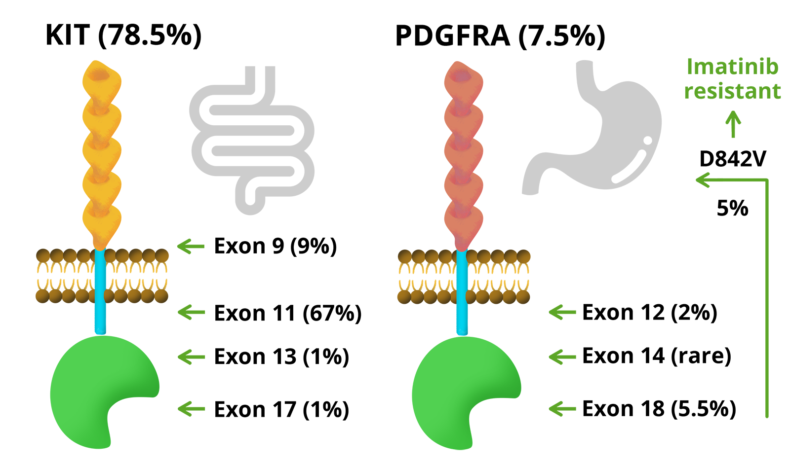

Tumores del estroma gastrointestinal

2.2 Biología molecular
CARACTERÍSTICAS
A nivel molecular, los GIST se caracterizan por presentar mutaciones activantes (de ganancia de función) que afectan a dos genes que codifican para receptores tirosina cinasa (RTC) de forma mutuamente excluyente: KIT y PDGFRA.
Las mutaciones de KIT se detectan entre el 60-85% de los GIST, mientras que las mutaciones de PDGFRA se encuentran entre el 5-10% de los casos.
Aproximadamente el 10-15% de los GIST no presentan mutaciones detectables en ninguno de estos receptores (GIST wild type) indicando que otras vías moleculares pueden también estar implicadas en la patogénesis de estos tumores.
Tanto KIT como PDGFRA son Receptor Tirosin Cinasa (RTC) RTC tipo III que comparten una estructura común con tres dominios funcionales principales:
Un dominio extracelular que incluye una región de unión al ligando.
El dominio de dimerización.
Un dominio yuxtamembrana; y un dominio cinasa dividido en dos partes: TC1 y TC2.
La unión del ligando resulta en la homodimerización del receptor, la activación de la cinasa y la autofosforilación del receptor. La fosforilación de residuos específicos de estos receptores inicia una serie de acontecimientos de señalización intracelular que activa procesos como el crecimiento, la apoptosis, la quimiotaxis y la proliferación celular.
Las mutaciones oncogénicas que se producen en estos receptores resultan en una activación constitutiva de la actividad cinasa, incluso en ausencia de ligando.
KIT and PDGFRA mutations in >2000 GISTs
(Heinrich-Corless Lab)
Wild-type tumors: 14%
Espectro de mutaciones en GIST
Las mutaciones que se encuentran en los GIST afectan principalmente a aquellos exones que codifican para los dominios funcionales de los receptores KIT y PDGFRA y actualmente se clasifican de tres formas en función del tipo de mutación, el dominio del receptor afectado y el tratamiento con inhibidores de RTC. Los GIST presentan muchos tipos de mutaciones que incluyen: deleciones, mutaciones puntuales, duplicaciones, inserciones y mutaciones complejas. Las mutaciones que afectan los dominios de dimerización o yuxtamembrana se conocen como mutaciones reguladoras, y aquellas que afectan a las regiones TC1 y TC2 como mutaciones enzimáticas.
Por último, las mutaciones que se detectan antes de empezar un tratamiento con un inhibidor de RTC, como el imatinib, se conocen como mutaciones primarias (y afectan principalmente a los exones 11, 9, 13 y 17 de KIT, y a los exones 18, 12 y raramente 14 de PDGFRA), mientras que aquellas mutaciones que se detectan durante el tratamiento y que son responsables, en gran medida, a una resistencia adquirida a los inhibidores de los RTC se conocen como mutaciones secundarias (generalmente se detectan en los exones 13, 14 y 17 de KIT y 18 de PDGFRA).
Mutaciones en KIT
Las mutaciones más frecuentes en KIT afectan al exón 11 (dominio yuxtamembrana). Aproximadamente el 70% de los GIST presentan alguna mutación en este exón. El dominio yuxtamembrana se encarga de inhibir la dimerización del receptor en ausencia de ligando. Básicamente podemos encontrar tres tipos de alteraciones en este exón.
Las más frecuentes son las deleciones intersticiales, que suelen afectar al inicio del exón 11 (región 5ª, entre los codones 550 y 579) y especialmente a los codones 557 a 559.
Con menor incidencia se encuentran las mutaciones puntuales, que por lo general se limitan a cuatro codones (557, 559, 560 y 576).
Por último, en el extremo final del exón (región 3ª, entre los codones 571 y 591), y en una proporción de casos mucho menor, se pueden presentar duplicaciones en tándem de un determinado número de codones que se han asociado a GIST de localización gástrica y de morfología epitelioide o mixta.
En el exón 9 (dominio extracelular) sólo se ha descrito la duplicación de los residuos 502-503 y que está presente en un 9-20% de los casos dependiendo de los estudios.
Esta mutación se asocia fundamentalmente a GIST de localización intestinal y mayor potencial maligno.
Los dominios TC1 y TC2 están codificados por los exones 13 y 17 respectivamente. En estos exones sólo se han encontrado mutaciones puntuales siendo la frecuencia de las mismas entre el 0,8 y el 4,1% para el exón 13 e inferior al 1% en el caso del exón 17.
Mutaciones en PDGFRA
Una minoría de GIST que carecen de mutaciones en KIT presenta mutaciones en PDGFRA. Las mutaciones en PDGFRA se han encontrado en el dominio yuxtamembrana (0,7%) codificado por el exón 12, donde las mutaciones se concentran entre los codones 559-572; en el dominio enzimático TC2 (6%) codificado por el exón 18, siendo la mutación D842V la más frecuente (65-75%); y muy raramente en el exón 14 (0,1%) que codifica para el dominio TC1.
En global la frecuencia de mutaciones de PDGFRA en GIST se estima en torno al 5- 10% y se asocian a GIST de localización gástrica y morfología epitelioide.
GIST wild type
Aproximadamente el 12-15% de los GIST adultos y el 90% de los GIST pediátricos carecen de mutaciones en KIT y PDGFRA.
La patogénesis molecular y la biología de este subgrupo de tumores constituyen uno de las áreas de mayor especulación e investigación en el que ya se ha demostrado la implicación de otros RTC, como el IGF1R33, NTRK, y otras vías de señalización intracelular como la SDH, NF1, BRAF, cuyas mutaciones se han descrito en un 7% de los GIST wild type.
GIST negativos para KIT
En aproximadamente el 5% de los GIST, la inmunotinción para CD117 es completamente negativa o, como mucho, dudosamente positiva, lo que entraña dificultades a nivel diagnóstico. Entre el 30-50% de estos tumores presenta mutaciones en KIT (mayoritariamente en el exón 11) o en PDGFRA, lo cual puede llegar a tener consecuencias terapéuticas.
El hecho de que un GIST pueda ser CD117 negativo y además wild-type para las mutaciones de KIT y PDGFRA no está del todo claro, ya que hoy por hoy el diagnóstico se hace por exclusión.
Es más, el consenso europeo propone el análisis mutacional de KIT y PDGFRA para confirmar el diagnóstico de GIST, particularmente en los casos CD117/DOG1 negativos.
GIST familiar
Hasta la fecha se han descrito alrededor de una docena de familias portadoras de mutaciones heredables en KIT o PDGFRA, siendo la mayoría de las alteraciones mutaciones puntuales. La penetrancia de estas mutaciones en las familias es alta ya que la mayoría de los miembros afectos desarrollan uno o más GIST a mediana edad, si bien la mayoría de estos tumores no sigue un curso maligno.
Además de los tumores GIST, los individuos con mutaciones en el exón 11 de KIT pueden desarrollar hiperpigmentación en la piel y mastocitosis.
Otro proceso asociado a tumores GIST es la neurofibromatosis múltiple tipo I (NFI), ya que en estos enfermos se detecta hiperplasia de células intersticiales de Cajal y múltiples pequeños GIST en intestino delgado.
Si bien los GIST en el contexto de una NFI tiñen intensamente con CD117 no presentan mutaciones en KIT y PDGFRA.
GIST pediátricos
Alrededor del 1-2% de los GIST acontecen en edad pediátrica. La forma de presentación, en la mayoría de los casos, es multinodular, gástrica y de histología epitelioide.
El 90% de estos tumores son wild-type y el 10% restante responde al genotipo de los GIST adultos.
En ocasiones estos tumores se asocian a la triada de Carney siendo en este caso su genotipo wild-type. Sin embargo, aquellos GIST que se desarrollan en el contexto de la Triada de Carney pueden aparecer en jóvenes adultos de hasta 30 años.
Factores predictivos en enfermedad localmente avanzada y/o metastásica
Correlación genotipo primario con resultados terapéuticos, en primera línea, con imatinib
Pacientes con mutación KIT ubicada en exón 11 tienen más probabilidad de respuesta, un mayor tiempo a la progresión (TTP) y supervivencia global (SG) al compararlos con casos mutados en exón 9, o con casos wild type.
En el metaanálisis realizado de los 2 ensayos fase III (EU-AUS y US-CDN) que comparaban imatinib 400 mg vs 800 mg diarios en pacientes con GIST metastásicos o irresecables se comprobó, sobre 772 pacientes con mutación conocida, que pacientes con mutación en exón 11 tuvieron mejor SLP y SG respecto a mutación en exón 9 o wild type, hallazgo que se mantuvo en el análisis multivariante.
En el citado metaanálisis se comprobó que el único factor predictivo para la dosis de imatinib fue, y sólo para supervivencia libre de progresión (SLP), el genotipo de mutación en exón 9 con mayor beneficio, estadísticamente significativo, en SLP en los pacientes que recibieron dosis altas de imatinib. También se observó una disminución de riesgo de morir en un 31% a favor de la dosis de 800 mg aunque no alcanzó la significación estadística.
Correlación genotipo primario con resultados terapéuticos, en segunda línea, con sunitinib
Sunitinib inhibe múltiples receptores tirosina cinasa (VEGFR, PDGFR, KIT, FLT3) y tiene mayor afinidad en la unión a receptor que el imatinib.
Datos derivados de un estudio sobre 78 pacientes (de 97 incluidos) con información de genotipo pre- imatinib en un ensayo clínico fase I/II, tratados en segunda línea con sunitinib, obtuvieron una correlación de este fármaco con el genotipo primario. Al considerar el beneficio clínico (respuestas parciales y estabilizaciones con duración mayor de 6 meses) se obtuvo diferencias significativas a favor de mutados en exón 9 o wild type en comparación con exón 11 mutado.
Asimismo, la mediana de supervivencia libre de progresión fue significativamente mayor en pacientes con genotipo primario de mutación en exón 9 (19,4 meses; p= 0,0005) o wild type (19 meses; p = 0,0356) respecto a mutados en exón 11 (5,1 meses).
Se obtuvo una mediana de supervivencia significativamente mejor para mutados en exón 9 de 26,9 meses (p = 0,012) y para wild type de 30,5 meses (p = 0,0132) respecto a mutados en exón 11 (12,3 meses).
Correlación genotipo secundario con eficacia terapéutica de sunitinib
Se admite que la mayor parte de resistencias secundarias observadas en pacientes con GIST metastásicos son motivadas por la aparición de nuevas mutaciones en el mismo gen pero en distintos exones respecto a las mutaciones primarias. Además en los pacientes inicialmente wild type no se han encontrado mutaciones secundarias en pacientes resistentes.
Datos in vivo sobre biopsias realizadas a pacientes en el tiempo de progresión a imatinib aportan información de mutaciones secundarias identificadas en el 64% de los casos disponibles. La SLP y el beneficio clínico fue significativamente mejor en las mutaciones secundarias localizadas en exones 13 o 14 respecto a las localizadas en exones 17 o 18.
Los resultados in vitro refuerzan las hipótesis previas: sunitinib inhibe la fosforilación de KIT con mutaciones dobles como V560D + V654A (exones 11 + 13) y V560D + T670I (exones 11 y 14) los cuales son resistentes a inhibición de imatinib in vitro. Por otra parte, líneas portadoras de doble mutación en los que la segunda mutación afecta a la región activadora como V560D + D816H son resistentes a sunitinib y a imatinib aunque hay algunas variantes con sensibilidad intermedia a imatinib.
A pesar de la correlación existente entre el genotipo secundario y eficacia de sunitinib, lo cierto es que se ha comunicado una notable heterogeneidad clonal tanto intralesional como entre diferentes lesiones metastáticas en un mismo paciente.
Mecanismos de resistencia a imatinib
La resistencia al imatinib es un problema terapéutico importante, ya que, de los enfermos que no responden a imatinib de entrada (resistencia primaria, un 5-15% de los enfermos) o dejan de responder (resistencia secundaria), apenas un 5% responde a tratamientos tradicionales.
La resistencia primaria podría ser definida como la que ocurre en los primeros meses de terapia con imatinib.
Esta progresión generalmente es multifocal, y en estos tumores puede verse una mayor frecuencia de mutaciones en el exón 9 y WT. La resistencia secundaria puede ocurrir con dos patrones clínicos:
Resistencia parcial o focal, en la que una localización o un pequeño número de metástasis muestran crecimiento de un nódulo en el interior de una masa tumoral o un aumento de tamaño de un pequeño número de lesiones, con incremento de la captación en la PET, mientras que el resto de la enfermedad continúa controlada con imatinib.
Resistencia multifocal, con empeoramiento general de la enfermedad.
Los mecanismos de resistencia al imatinib son heterogéneos. Pueden agruparse en varios grupos, y son similares a los que se están describiendo en la LMC:
Resistencia en la diana debido a una nueva mutación.
Resistencia de la diana por sobreexpresión, que se acompaña de amplificación genómica de kit, sobreexpresión de la oncoproteína kit sin que se puedan demostrar nuevas mutaciones intragénicas.
Resistencia por modulación de la diana, que se manifiesta por la activación de un receptor alternativo de TK, que puede acompañarse de una pérdida de expresión de la oncoproteína kit.
Resistencia funcional: evidenciada por la activación de KIT o de PDGFR en ausencia de una mutación genómica secundaria.
El mecanismo más frecuente es la aparición de una nueva mutación. Ésta puede ser una mutación que por sí sola no conferiría resistencia pero que, al asociarse a la mutación primaria en el exón 11, produce hiperactivación de KIT y resistencia o una mutación que confiere resistencia por sí misma. Las mutaciones secundarias en los exones 13, 14, 17 o 18 se producen en el 62% de los GIST con mutación primaria del exón 11 del KIT, pero sólo en el 16% con una mutación primaria del exón 9 y, además, no aparecen mutaciones secundarias en los GIST sin una mutación primaria en KIT o PDGFRA. En los GIST con mutaciones primarias en el exón 11, la mutación secundaria más frecuente aparece en el exón 17.
Hay evidencia en una pequeña proporción de pacientes (18,8%) de evolución clonal y/o mutaciones secundarias policlonales. Así, en un mismo paciente, con el tiempo, pueden desarrollarse diferentes mutaciones secundarias en diferentes implantes tumorales, hallazgo que habrá que tener en cuenta en el enfoque terapéutico de estos enfermos.
RECOMENDACIONES FINALES
En el último consenso multidisciplinario de la ESMO, se recomienda la incorporación del estudio molecular sistemático al procedimiento diagnóstico de todos los GIST (pero sobre todo en los GIST avanzados), dada la relevancia que este tipo de información está teniendo desde el punto de vista predictivo y pronóstico, y es exigida en los casos de GIST sin expresión de CD117 y DOG1. Para ello se recomienda la remisión de estos casos a centros de referencia con laboratorios integrados en un programa de garantía de calidad y con experiencia contrastada.
El conocimiento de mutaciones secundarias no tiene una traducción clínica tan clara, al menos por el momento, y debería ceñirse a estudios investigacionales.